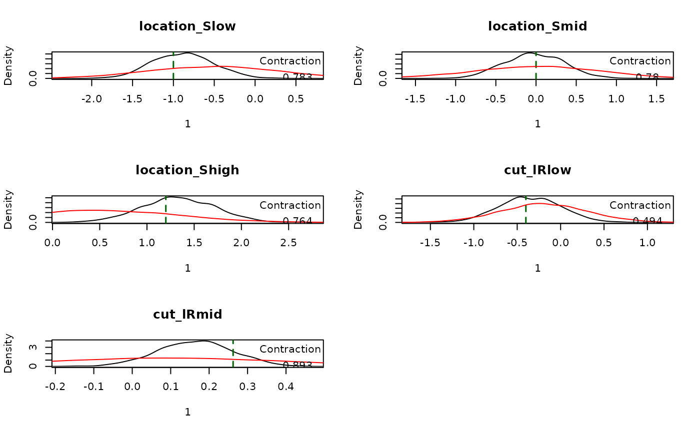
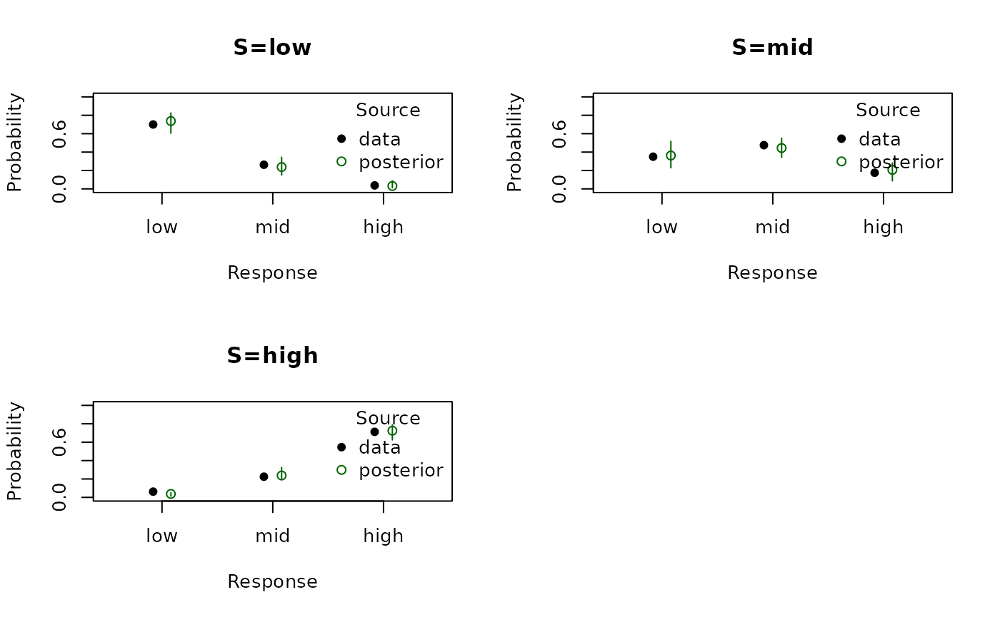
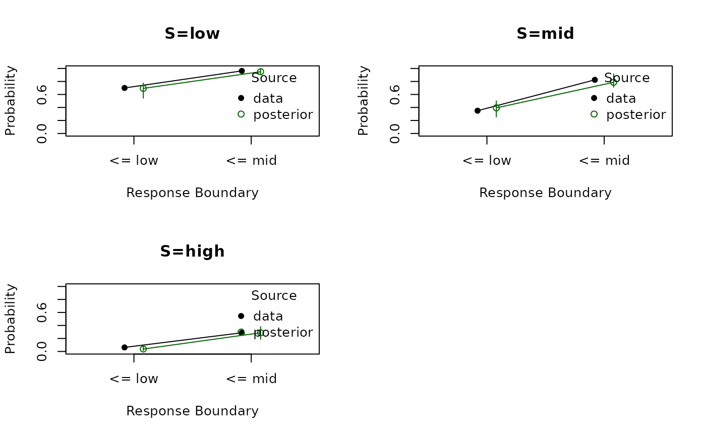

Introduction
This vignette shows how to use the response-only models currently implemented in EMC2. These models fall into two different response geometries:
- Ordered response models:
ordered_probit()andordered_logit() - Multinomial choice models:
multinomial_logit()andmultinomial_probit()
Ordered response models assume a single latent evidence variable and
one or more cutpoints. In the binary case this is the same general setup
as signal detection theory: a latent evidence value is compared against
a criterion. With more than two ordered responses, the single criterion
becomes a set of ordered criteria, as in rating or confidence versions
of Signal Detection Theory (SDT). ordered_probit() uses a
Gaussian latent noise distribution, which makes it the closest match to
classical Gaussian SDT. ordered_logit() uses the same
threshold geometry but with logistic noise.
Multinomial response models are different. They are not threshold
models on one evidence axis, but random-utility models over a set of
alternatives. multinomial_logit() is the standard
multinomial-logit or softmax model: each response has a latent utility
and the response probabilities are a softmax over those utilities.
multinomial_probit() uses the same utility geometry but
with Gaussian noise instead of the softmax/logit noise assumption.
The worked examples below use ordered_probit() and
multinomial_logit(). The other two models follow the same
design logic, but swap the latent noise distribution within the same
geometry.
The workflow is the same as for the DDM and race models:
- Specify the design
- Inspect sampled parameters and their mapping to design cells
- Simulate data
- Define priors and create an
emcobject - Fit the model
- Summarize posterior estimates and compare observed and posterior predictive choice proportions
choice_summary <- function(data) {
out <- as.data.frame(prop.table(table(data$S, data$R), 1))
names(out) <- c("S", "R", "prob")
out
}1. Ordered Response Models
Ordered response models place responses on a single latent evidence
axis and use cutpoints to divide that axis into response categories.
Here we use a 3-category task with low, mid,
and high stimuli and responses. location
depends on stimulus identity, scale is fixed to 1, and
cut ~ 1 estimates the standard K - 1
thresholds.
Conceptually, this is the SDT-like response family in EMC2.
In a binary yes/no task there is one criterion. In a 3-category task
there are two ordered criteria. location shifts the latent
evidence distribution, and cut determines where the
response boundaries lie.
matchfun <- function(d) d$S == d$lR
design_ord <- design(
Rlevels = c("low", "mid", "high"),
factors = list(subjects = 1, S = c("low", "mid", "high")),
formula = list(location ~ 0 + S, scale ~ 1, cut ~ 1),
matchfun = matchfun,
constants = c(scale = log(1)),
model = ordered_probit
)##
## Sampled Parameters:
## [1] "location_Slow" "location_Smid" "location_Shigh" "cut_lRlow"
## [5] "cut_lRmid"
##
## Design Matrices:
## $location
## S location_Slow location_Smid location_Shigh
## low 1 0 0
## mid 0 1 0
## high 0 0 1
##
## $scale
## scale
## 1
##
## $cut
## lR cut_lRlow cut_lRmid
## low 1 0
## mid 0 1sampled_pars() shows the free parameters, and
mapped_pars() shows how they map to the latent design
cells.
sampled_pars(design_ord)## location_Slow location_Smid location_Shigh cut_lRlow cut_lRmid
## 0 0 0 0 0
p_vector_ord <- sampled_pars(design_ord)
p_vector_ord[] <- c(-1, 0, 1.2, -0.4, log(1.3))
mapped_pars(design_ord, p_vector_ord)## S lR lM location scale cut cut_expanded
## 1 low low TRUE -1.0 1 -0.400 -0.4
## 2 low mid FALSE -1.0 1 0.262 0.9
## 4 mid low FALSE 0.0 1 -0.400 -0.4
## 5 mid mid TRUE 0.0 1 0.262 0.9
## 7 high low FALSE 1.2 1 -0.400 -0.4
## 8 high mid FALSE 1.2 1 0.262 0.9Now we simulate data from these parameters:
dat_ord <- make_data(parameters = p_vector_ord, design = design_ord, n_trials = 80)For choice-only models it is often most useful to inspect response proportions directly:
choice_summary(dat_ord)## S R prob
## 1 low low 0.7000
## 2 mid low 0.3500
## 3 high low 0.0625
## 4 low mid 0.2625
## 5 mid mid 0.4750
## 6 high mid 0.2250
## 7 low high 0.0375
## 8 mid high 0.1750
## 9 high high 0.7125Next we define a prior and create the emc object.
prior_ord <- prior(
design = design_ord,
type = "single",
pmean = c(
location_Slow = -0.5,
location_Smid = 0,
location_Shigh = 0.5,
cut_lRlow = -0.2,
cut_lRmid = log(1.1)
),
psd = c(
location_Slow = 0.8,
location_Smid = 0.8,
location_Shigh = 0.8,
cut_lRlow = 0.5,
cut_lRmid = 0.3
)
)
emc_ord <- make_emc(dat_ord, design_ord, prior_list = prior_ord, type = "single", n_chains = 2)## Processing data set 1## Likelihood speedup factor: 26.7 (9 unique trials)2. Fit the Ordered Model
The following call fits the model and saves the result:
emc_ord <- fit(emc_ord, fileName = "data/response-models-ordered.RData")summary() reports posterior quantiles,
Rhat, and ESS:
summary(emc_ord)##
## alpha 1
## 2.5% 50% 97.5% Rhat ESS
## location_Slow -1.596 -0.883 -0.144 0.999 2157
## location_Smid -0.730 -0.030 0.704 1.000 1871
## location_Shigh 0.566 1.320 2.086 1.000 1974
## cut_lRlow -1.050 -0.363 0.333 1.000 2155
## cut_lRmid -0.030 0.167 0.348 1.001 1907plot_pars() compares the posterior to the generating
values:
plot_pars(emc_ord, true_pars = p_vector_ord, use_prior_lim = FALSE)
Finally, plot_fit_choice() compares observed response
probabilities to posterior predictive intervals:
plot_fit_choice(emc_ord, factors = "S", style = "prob", n_post = 20)
For ordered responses, cumulative fits can also be useful because they reflect the threshold structure directly:
plot_fit_choice(emc_ord, factors = "S", style = "cumulative", n_post = 20)
To switch from ordered probit to ordered logit, the design is identical except for the model choice. That is, the latent threshold structure stays the same, but the Gaussian link is replaced by a logistic one:
design_ord_logit <- design(
Rlevels = c("low", "mid", "high"),
factors = list(subjects = 1, S = c("low", "mid", "high")),
formula = list(location ~ 0 + S, scale ~ 1, cut ~ 1),
matchfun = matchfun,
constants = c(scale = log(1)),
model = ordered_logit
)EMC2 also supports multinomial probit and logit response models, they have documentation, but they mostly exist to be paired with trend models, more on that later!